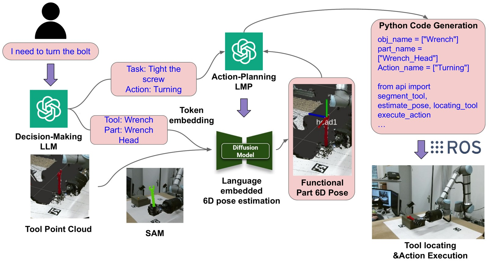

1. Identify the part
Interpret the instruction to identify the tool, its function, and the part needed for the task.
University of Hamburg
IEEE Robotics and Automation Letters (RA-L), 2025 · Humanoids 2025
A tool can serve different tasks through different functional parts. We combine natural language instructions with a 3D point cloud to estimate the 6D pose of the part that matters for the task.

Interpret the instruction to identify the tool, its function, and the part needed for the task.
Condition a diffusion-based pose estimator on language embeddings and the observed 3D point cloud.
Use the estimated functional-part pose as a reference for downstream manipulation.
The same idea supports different task-relevant parts, including a mug handle and a wrench head.
The work introduces a synthetic dataset with annotated 6D poses of tool functional parts. Experiments evaluate category-level pose estimation and demonstrate task execution on a real robot. The dataset page provides access information and usage terms.
Yuyang Tu, Yunlong Wang, Hui Zhang, Wenkai Chen, and Jianwei Zhang. “Language-Embedded 6D Pose Estimation for Tool Manipulation.” IEEE Robotics and Automation Letters, 10(9), 8618–8625, 2025. doi:10.1109/LRA.2025.3587559. Presented at Humanoids 2025.